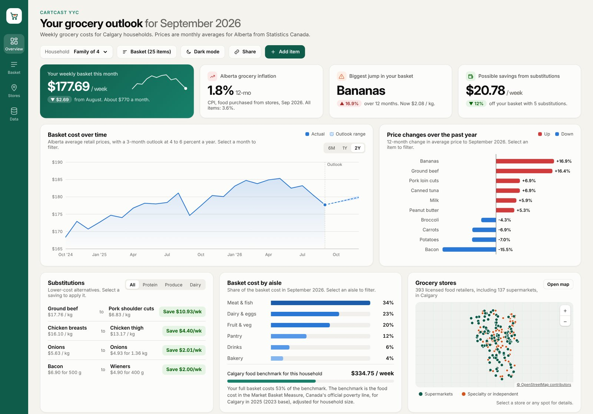

CartCast YYC
A live dashboard that estimates what a Calgary household spends on groceries each week, built entirely on public data from Statistics Canada and the City of Calgary.
Live dashboard →View on GitHub →
- Role
- Data pipeline, dashboard and deployment
- Built with
- Python
- pandas
- JavaScript
- SVG
- GitHub Actions
- Data
- Statistics Canada, City of Calgary

The problem
Food prices in Canada are forecast to rise 4 to 6 percent in 2026. Statistics Canada already publishes the prices a household would need to plan a grocery budget, but they sit in a table of about 110 products across 13 regions. Nobody plans their week from that table.
CartCast started as a team pitch in my DATA 398.1 course. I wrote the code: the data pipeline, the dashboard and the automated deployment.
What it does
- Prices an editable basket of 25 items for four household sizes, with a two-year trend and a three-month outlook.
- Shows Calgary grocery inflation from the Consumer Price Index and compares the basket to the Market Basket Measure food cost for Calgary.
- Suggests cheaper substitutions, shows the weekly saving and applies them to the basket in one click.
- Maps licensed food retailers. You can search any Calgary address or use your location to see what is within walking distance.
- Cross-filters every chart by month, aisle, product, community or store type, and stores the whole view in the URL so it can be shared as a link.
How it works
A Python package built on pandas downloads the Statistics Canada tables and the City of Calgary licence data, cleans them and writes a compact snapshot into the repository. A build step then renders one self-contained HTML file with the data embedded in it.
The dashboard is plain JavaScript with hand-built SVG charts and a custom map, with no front-end libraries and no server. Because the data lives in the page, the browser recalculates the basket, substitutions and charts as soon as the user changes something.
A GitHub Actions workflow runs every Monday. It downloads new data, commits the snapshot, rebuilds the page and deploys it to GitHub Pages. A second workflow runs 29 unit tests on every push, covering the loaders, the basket maths, store classification and the build.
Challenges
No city-level prices
Statistics Canada doesn't publish average prices for individual cities, so item prices are Alberta averages. I kept the Calgary-specific parts (inflation, the food benchmark and the store map) separate and labelled the price data clearly as provincial, so the dashboard never claims more precision than the data has.
Average prices are not inflation
Average prices change when package sizes or the mix of stores change, so Statistics Canada warns against reading them as inflation. The dashboard calls those figures "change in average price" and uses the CPI for every inflation number.
Finding the grocery stores
The City of Calgary business licence data has no clean grocery store category, so I classify licences by keywords in their trade names. The first versions got this wrong in ways that only showed up on the map:
- Most supermarkets were missing because the query only accepted two licence statuses, while about two-thirds of active licences are listed as "Renewal Licensed".
- Walmart was missing because the licence data spells it "WAL-MART".
- Shops in Market Mall, such as the Apple Store, were listed as grocers because the mall's name contains "market".
I fixed each one with a rule and a unit test so it can't come back. The latest snapshot keeps 366 food retailers out of 596 licence records.
Making the basket add up
For any household other than a family of four, quantity times price didn't equal the weekly cost, because the basket table still showed family-of-four quantities. Totals could also be a cent off the sum of their rows. I changed the table to show the quantity the selected household actually buys and rounded each item to the cent before adding. Packaged items can now be entered in packages, by weight or by volume, so the basket matches how people shop.
Limitations
- Prices are Alberta averages and don't reflect sales, loyalty discounts or store brands.
- The default basket is illustrative and hasn't been checked against a nutritional standard.
- Walking distances are straight-line, so real routes are longer.